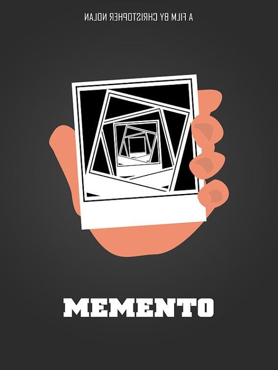

-

-

Memento
Leonard Shelby es un ex agente de seguros que dedica su día a día a investigar la muerte de su mujer, asesinada a manos de una persona a la que Leonard no logra recordar. Mientras intentaba detener al criminal, sufrió un golpe en la cabeza que le dejó inconsciente. Al despertar, su memoria estaba dañada, sufría una extraña e incurable enfermedad que le impedía retener recuerdos a corto plazo. De esta forma, la última imagen que guarda en su cabeza es la de la muerte de su esposa, pues los nuevos recuerdos que acumula en su memoria desaparecen al despertar. A pesar de saber su nombre y todos los detalles de su pasado, ya no puede crear nuevos recuerdos. Para dar con el asesino de su esposa cuenta con la ayuda de una cámara instantánea y varias notas tatuadas por todo su cuerpo.